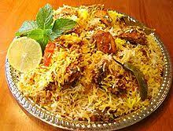

Chicken Biryani
Racipe by Muhammad Shariq

About Racipe
Chicken Biryani in English is the most preferred dish by Pakistani. From restaurants to home, Chicken Biryani has its presence everywhere. Chicken Biryani is perfect amalgamation of rice and meat cooked with desi spices. Chicken Biryani in English is a delicious savory rice dish, which is layered with spicy chicken, caramelized onion, and tomatoes. Chicken is cooked in gravy style with all the Desi spices like nutmeg, black and green cardamoms, black and red pepper, green chili, yogurt, mint leaves etc. Chicken gravy and rice are layered in huge pot and on top it is decorated with crushed all spices, mint leaves, yellow color, and biryani essence. It is one of the compulsory dishes for all special occasion. Why not try this chicken biryani recipe in English at home with this easy & quick homemade recipe
Ingredients
- 2 cups Basmati- Rice
- 3/4kg Chicken pieces
- Onion 3 large, sliced
- 1 cup Yoghurt
- 1 tsp Ginger paste
- 1/2 tsp Garlic paste
- 1 tsp Green chilli paste
- 1/2 cup Tomato puree
- 2 tsp Red chilli powder
- 1 tsp Turmeric powder
- 1 tsp Cumin powder (roasted)
- 1/2 tsp Cardamom powder
- 2 tsp Garam masala powder
- 1/2 cup Milk
- A pinch Saffron
- 1 tsp Coriander powder
- Green coriander leaves 2 tbsp, chopped
- Water 3 1/2 cups
- 7 tbsp Oil
- Salt as required
Method
- Make a mixture with tomato yoghurt, puree, green chilli paste, Ginger garlic paste,
red chilli powder, roasted cumin powder, turmeric powder, garam masala powder, coriander powder and salt.
- Take the chicken and marinade it in the same mixture. Let it rest for 3-4 hours.
- Put oil in a pan, heat it and fry onions till they turn golden brown.
- Now, to this add the marinated chicken and cook the entire mixture for 10 mints.
- After that in a pressure cooker, take the rice and add 3 1/2 cups of water to it. Also,
take the saffron, mix with the milk and add to the rice.
- Lastly, add the cardamom powder and the chicken pieces, along with the marinade.
- Mix all the ingredients gently, cover with the cooker lid and pressure cook for 1 whistle.